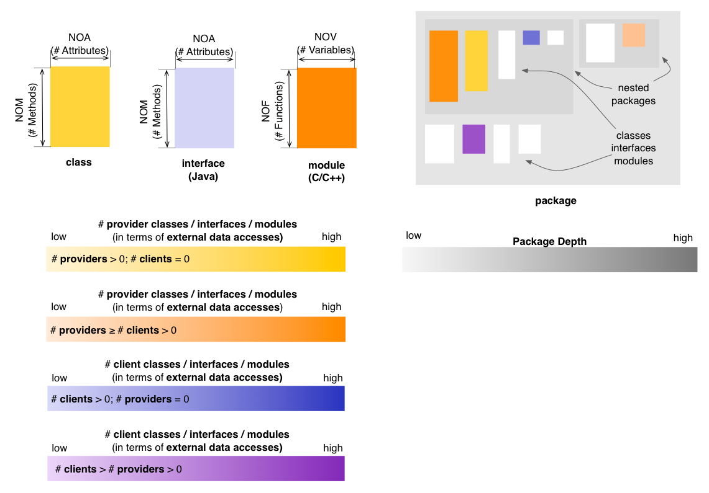
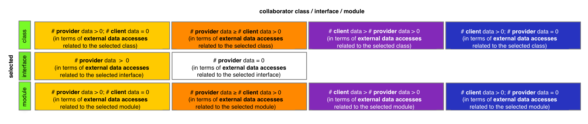

Package Map - Encapsulation Perspective
The Encapsulation Perspective of the Package Map
provides insight into the way classes, interfaces (Java), or modules (C
and C++) expose their data to external clients. In the default state,
the Encapsulation Perspective will render classes, interfaces, and
modules based on
their predominant nature from the viewpoint of encapsulation, using
four color gradients:
- if a class, interface, or module only accesses but does not
itself expose data (i.e. it is a
pure client), it is rendered in a shade of yellow
- if a class, interface, or module both exposes and itself
accesses
data from other classes, interfaces, or modules, it will be rendered in
a color that depends on which aspect is predominant (i.e. mostly client
shown in a shade of orange, or mostly provider shown in a shade
of magenta)
- if a class, interface, or module only exposes but does not itself
access data from other classes, interfaces, or modules (i.e. it is a
pure provider) it is shown in a shade of blue
In this context the term “exposes data” means that the class,
interface, or module has data that is either declared public, or
accessible through a public accessor, and that there is at least one
other class or module that accesses this data, either directly or
through the provided accessor method. In other words, merely defining
data as public is not considered as “exposing” that data, unless there
is at least one client that actually accesses it.

Entity selection
The user may select a class, an interface or a module in the map, in
which case the coloring of the map changes to reflect the encapsulation
from
the point of view of the selcted entity. The selected entity is colored
in green (with no borders). Its collaborator classes, interfaces, and
modules are colored using
the four colors described below, based on their relation to
the selected class, interface or module. In case of the Encpasulation
Perspective, this relation is defined in terms of external data
accesses. If a class, an interface, or a module has no relation to the
selected entity, its coloring will be disabled.

Other quality perspectives
Complexity, Coupling,
Design Flaws
Metrics used
NOA, NOF, NOM,
NOV